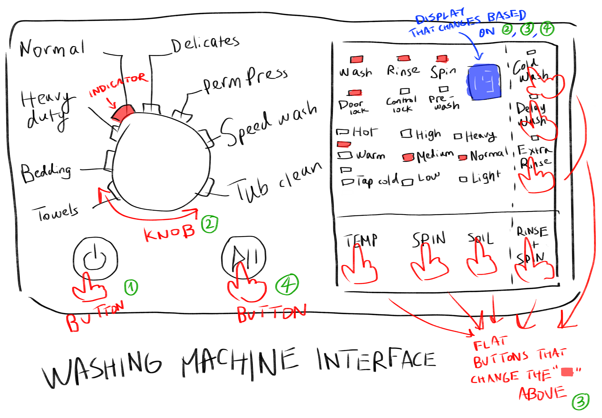
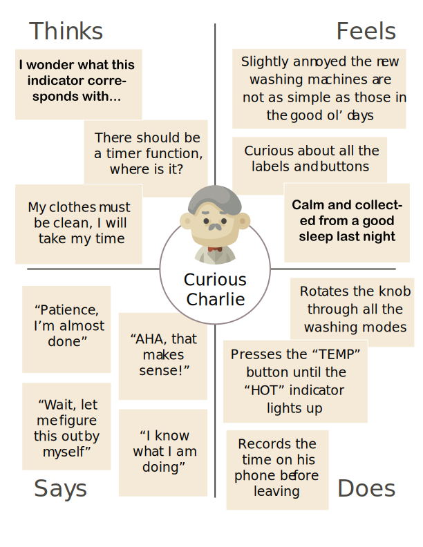
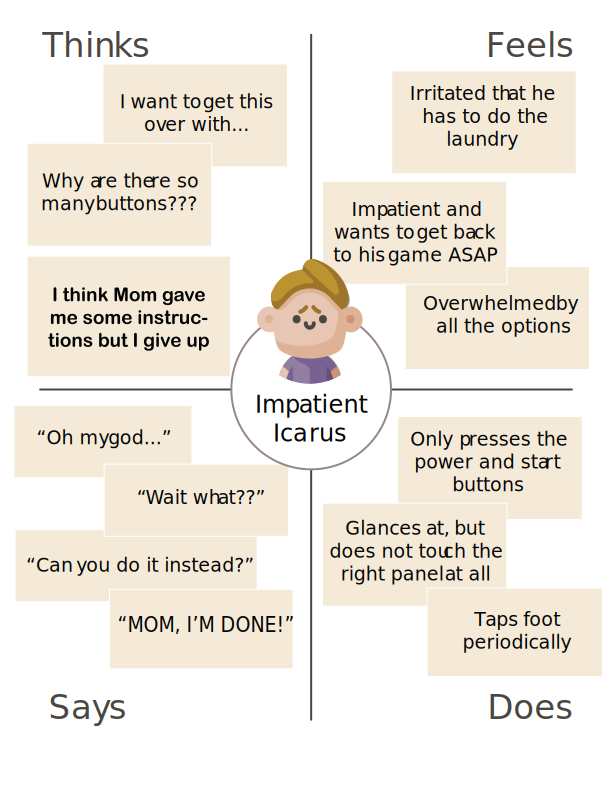
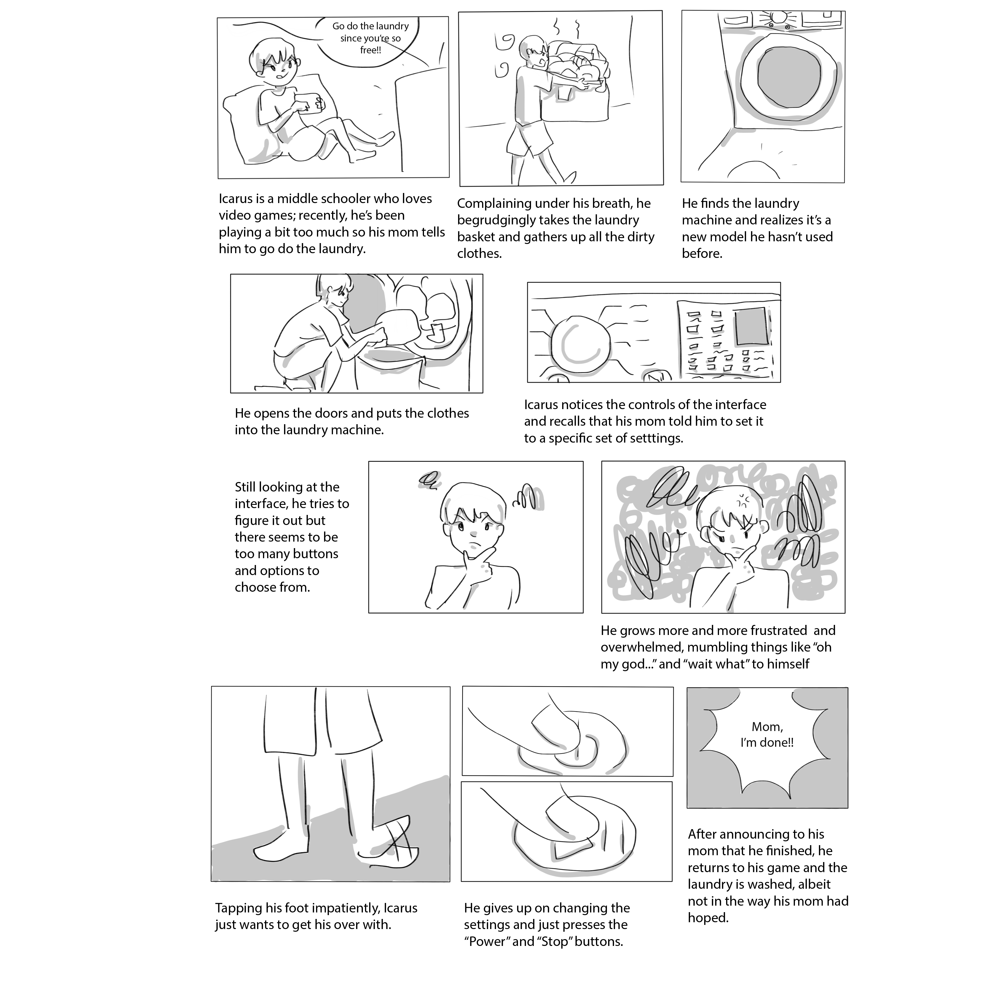

On Personas & Storyboards: A Study of the Washing Machine UI
The washing machine is an essential household item found in most homes. Despite
playing such an integral role in our everyday lives, it is not always easy to operate:
while some washing machine interfaces only comprise of a few buttons, others are much
more complicated. By observing how real users interact with these more convoluted
interfaces, we can gain valuable designs insights by creating personas and storyboards
to create future products better suited to their needs in the future.
The Washing Machine UI
The following is a sketch of a more complicated washing machine interface.

This interface lets the user select different settings at which
to wash their clothes. The interactive components function as follows:
(1) press the power button to turn on, (2) rotate the knob to determine the mode,
(3) press the flat buttons to finetune settings, and (4) press the start button to confirm.
User Observations
To explore how everyday users interacted with this interface, I observed and interviewed 3
users who had access to the interface. To guarantee a wide spectrum of possible experiences,
one user was chosen because they had never seen the interface before while the two other were
selected as they were previously seen using the interface.
User 1
Started with the right panel on the interface: tried pressing on
the flat buttons but didn't get a response, expressed a "what?"
After finding the power button, clicked and rotated through all the flat
button and knob options, respectively
Expressed an "oh my god" when clicking the "Delay Wash" button as the
blue display cycled through numbers 1-13 before returning to 0,
at which the user moved on to other buttons
Asked "where is the timer?" twice
Changed the knob back to "Normal" mode before pressing start button
User 2
Started by pressing the power button, then immediately rotated the knob
to "Normal" mode and pressed the start button
Glanced at, but did not touch the right panel at all
After pressing the start button, noted the timer on the display
and created a corresponding one on their phone
User 3
Started by pressing the power button, then rotated the knob to "Heavy Duty" mode
Pressed the "TEMP" and "Extra Rinse" flat buttons on the right panel, both repeatedly without
waiting for a response, then more times again to correct themselves.
Tapped foot periodically through the session
Spent around the same time pressing buttons as User 2, even though they had more
buttons to press.
From these observations, it seems like although the interface is rather unfriendly to new users, experienced
users can manipulate it easily with repeated usage. This choice in design seems well suited
for the washing machine, since it is a machine typical someone uses on a at least monthly if not weekly basis.
Interview Questions
After interacting with the washing machine interface, each user was then asked the following
questions. Their responses are summarized below:
How often do you use washing machines?
The second user uses washing machines weekly while the others use them biweekly.
In general, you find washing machine interfaces ______ to use.
Extremely easy (1)Extremely difficult (10)
All users seem to agree that washing machine interfaces in general were relatively easy (3-4) to use.
On average, how long do you think it should take to set and start a washing machine?
The first-time user expected a longer time (2 minutes) while the experienced users expected less time (30 seconds, 1 minute).
Interesting, the user who expected the longest time also spent the longest time on the interface. This could be
a example of expectations translating into actions.
What was your goal when using the interface?
Each user had different goals: the first-time user wanted to understand what all the buttons
meant since it was their first time using it, one experienced user (User 2) only wanted to begin washing their clothes as soon as possible, and
the other experienced user (User 3) wanted to pick a setting for heavy soiled laundry quickly.
Describe the process of starting the washing machine using this interface. Why?
Extremely easy (1)Extremely difficult (10)
The first two users found starting the machine quite easy (4, 2), stating that there are two
very obvious power and start buttons that they needed to press. However, User 2 did note that they only knew how to set the basic "Normal" mode setting and had no idea how to set the
other ones since they had no interest in altering the settings. User 3 chose average difficulty (5), stating that there were a lot of buttons and
it was not immediately clear what the display is showing since the response to button presses were not quick enough.
You understood what the washing machine was capable of from the interface. Why/why not?
Strongly agree (1)Strongly disagree (10)
User 2 who focused on speed disagreed (7), stating that too many
modes made it confusing and deterred them from exploring the functions. The other two users agreed (3, 4),
noting that the usage of text labels instead of symbols directly conveyed their functionality and despite
being slightly overwhelming at first, the responsive indicators of the interface helped them understand
what the buttons did (although User 3 didn't like how the response was slightly delayed).
Describe your overall experience using the interface. Why?
Very enjoyable (1)Very frustrating (10)
Only the second user enjoyed using the interface (3), stating that they liked the sounds of the buttons.
The other two users were more neutral (5, 6), noting that it just "got the job done."
Personas
Based on overarching trends from the observations and interview answers above,
I constructed two personas using a four-quadrant empathy map in hopes of creating good representations
of the spectrum of users that may interact with the washing machine interface.

Curious Charlie is a retired academic who still loves to learn. Meticulous and punctual,
he recently stained his favorite shirt. His main issue with the washing machine interface is that it is
very different from the ones he is used to and he cannot find functions that are important to him (i.e the
timer) that the washing machine surely has from the display. This persona takes his carefulness,
curiosity, and eventually understanding of the interface from User 1, his focus on the timer from Users 1 and 2,
and his focus on hot water / heavier settings from User 3.

Impatient Icarus is a middle schooler who loves video games. Because he played
too much recently, his mom tasked him with doing the laundry. (As a first time user) He finds the clutter of
the washing machine interface overwhelming (especially the right panel) and thinks it takes too long to learn as he
does not interact with the other buttons. This persona takes his short outbursts from User 1,
his short button press patterns and subsequent lack of understanding from User 2, and his impatience from User 3
Storyboard
Using the Impatient Icarus persona from above, I then created a storyboard envisioning how this persona
will typically react and use the washing machine interface:

Overall, it seems like despite a complicated interface that puts off first-time users from accessing all
the functions of the washing machine, the interface still does its job in allowing the user to start it. Possible
improvements to its understandability can include faster response times for the light indicators as well as
a cleaner layout design that appears less cluttered.